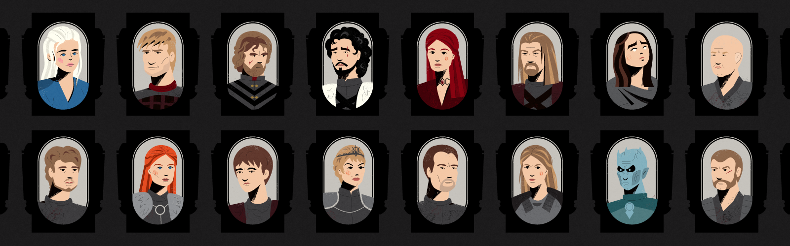

01
Data Engineering
Batch and incremental pipelines, ETL/ELT, metadata-driven frameworks, orchestration, data quality and performance engineering.
I’m Preet Mehta — I build modern data platforms, product analytics, and practical AI/ML systems that people can trust.

The first computer bug was a real moth, found taped into Harvard’s Mark II logbook in 1947.
· from Preet’s notebookI work at the intersection of data engineering, analytics and business outcomes — designing pipelines and platforms that make data usable, governed and ready for decisions.
The last six years have been in healthcare — claims, clinical, enrollment, survey and operational data — but the craft underneath is domain-agnostic: pipelines, platforms, product analytics and ML systems that people can trust.
Outside of work I teach, judge hackathons, mentor students and write Healthcare for Data Engineers — a daily series for people working with healthcare data.
“Turning complex data into systems people can trust.”
Twenty-two elements in six families. Hover a tile to inspect it — or pick a family to light it up.
Batch and incremental pipelines, ETL/ELT, metadata-driven frameworks, orchestration, data quality and performance engineering.
Lakehouse architecture, medallion patterns, Delta Lake, governance, cataloging and cloud-native analytics.
Healthcare data concepts, claims, clinical data, HEDIS, HCC/risk adjustment, Medicare and member analytics.
Feature pipelines, temporal data preparation, model-ready datasets, experimentation and analytics delivery.
Turning governed datasets into dashboards, self-service analytics and decision-ready experiences.
Architecture, migration planning, stakeholder alignment, governance and adoption across teams.
A practical view of the journey: source systems → ingestion → governed storage → transformation → quality → analytics and ML.
EMR • SQL Server • APIs • Claims • Files
Bronze → Silver → Gold • Delta
Catalog • Access • Quality • Lineage
BI • ML • Products • Decisions
Three case studies across healthcare platforms, ML foundations and cloud modernization. Hover a panel to open it.
Modernizing fragmented healthcare data into a governed, scalable platform for analytics and downstream ML.
Building temporal feature pipelines that respect snapshot dates, lookback windows and follow-up periods.
Moving legacy pipelines toward cloud-native architectures with stronger governance, reliability and observability.
Five organizations, one through-line — taking messy, high-stakes data and turning it into systems people can trust. Hover a logo for a peek inside — click to read the full story.

IoT & supply-chain data · 5 yrs
How I built this at DCM Shriram
Looker-certified in 30 days
How I built this at Searce
Sales-ops reporting at scale
How I built this at LinkedIn
Campaigns for 340M members
How I built this at CVS Health
$300M churn model · Medicare Stars
How I built this at EXLSelected organizations and outcomes preserved from the original portfolio.
 Searce Inc.$90k worth of projects; 75% delivered using Looker
Searce Inc.$90k worth of projects; 75% delivered using Looker Air AsiaLooker dashboards for customer analytics and fare prediction
Air AsiaLooker dashboards for customer analytics and fare prediction Arcus FinanceLooker dashboard tracking transaction patterns across countries
Arcus FinanceLooker dashboard tracking transaction patterns across countries EPL GlobalPower BI dashboards for real-time machine parameter analysis
EPL GlobalPower BI dashboards for real-time machine parameter analysis Imagination MediaTableau dashboards analyzing employee effort hours and profits
Imagination MediaTableau dashboards analyzing employee effort hours and profits Platform ScienceLooker dashboards monitoring logistics globally
Platform ScienceLooker dashboards monitoring logistics globally PulsePointBigQuery solution support for user-level cost tracking
PulsePointBigQuery solution support for user-level cost tracking ServifyBI solutions and Superset workshop
ServifyBI solutions and Superset workshop TRM LabsLooker dashboards for churn and retention KPIs
TRM LabsLooker dashboards for churn and retention KPIsPractical notes for data engineers — especially people working with healthcare data, cloud platforms and modern analytics.
Healthcare 101 → claims → diagnosis codes → HCC → risk adjustment → analytics and ML.
Read on Substack ↗ ON THIS SITEA growing collection of architecture, Spark, Databricks, cloud and healthcare data notes.
Explore posts → MEDIUMDeep dives, lessons learned and practical analytics stories.
Read on Medium ↗Certifications and the learning I keep in public.
Work that made it outside the classroom. Hover to pause.
Recognized for outstanding teaching assistance at Northeastern University.
Watch the story ↗Invited speaker at an Apache Spark meetup in New York, sharing practical data engineering knowledge.
Watch the talk ↗Attended Databricks Summit 2026 in San Francisco and shared my perspective through an interview.
Watch the interview ↗Invited to speak at UMass Amherst and share practical perspectives from data engineering and analytics.
See the invitation ↗Official organizer — creating a space for local data professionals to learn and connect.
Visit the user group ↗Invited as a judge for the Data Mining Hackathon at Northeastern University nine times.
NORTHEASTERN UNIVERSITYMentored and guided 3,000+ students through learning, career and data engineering journeys.
MENTORSHIP • COMMUNITY • TEACHINGInvited industry panelist at UMass Amherst's "Future of Computing" Tech Conference — on stage with leaders from Google, NVIDIA and MathWorks.
See the event ↗40 recommendations from LinkedIn — managers, teammates, clients and mentees. Hover to pause.

“As a Sr. Data Architect at CVS Health, I have had the pleasure of working closely with Preet for more than six months, and I can confidently recommend him as a highly skilled and dependable professional. Preet consistently demonstrates a strong work ethic, exceptional productivity, and outstanding organizational skills.”

“I have had the opportunity to work closely with Preet and have seen his leadership and mentorship qualities firsthand. He has been a great team leader and mentor to our team, and his presence brought confidence and stability to the project. Knowing that he was leading and guiding the team meant we could focus on execution without worrying about direction.”
“I have known Preet right from the day I interviewed him until today, having worked closely with him over the years. During this time, I have seen him grow tremendously, not only as a data engineer but also as a dependable leader and problem solver.”
“I have had the opportunity to work closely with Preet for the past year during our Databricks enablement journey at CVS Health. He has been instrumental in helping teams adopt Databricks right from infrastructure setup and onboarding to solution delivery and knowledge transfer.”
“Having worked alongside Preet at CVS, I have seen his leadership and dedication firsthand. He is deeply knowledgeable, easy to work with, and fiercely committed to delivering great solutions for the company. Preet is a person of high integrity who brings immense value to our team and network.”
“I've had the pleasure of working closely with Preet, who served as the project lead during a key data engineering initiative. Preet was instrumental in building a scalable framework on Databricks, bringing not only deep technical expertise but also a strong sense of ownership and adaptability.”
“I highly recommend Preet for his exceptional communication skills, attention to detail, and strong project management abilities. He has a clear and firm way of presenting facts, making complex topics easy to understand. His ability to prioritize tasks and keep projects on track is impressive.”
“I had the opportunity to work closely with Preet while setting up our Microsoft Azure and Databricks infrastructure at Panoramic. As we were venturing into Databricks for the first time, there were a number of unknowns and challenges in getting the environment ready across development, staging, and production.”
“I had the pleasure of working closely with Preet at CVS Health, where we interacted daily. From day one, Preet demonstrated exceptional engineering skills, quickly mastering the complexities of data pipelines for the commercial growth marketing team across four verticals.”
“I got to know Preet during his time at CVS Health as a data engineer. Right from the start, he showed that he's highly organised and pays keen attention to detail. He always strived to bring order to the chaos by diving deep into any data challenges and come up with optimised solutions.”

“I had the opportunity to work with Preet for over a year at CVS Health, during which time he played a pivotal role in supporting my team from a data engineering standpoint. Preet brought a genuine curiosity not only for technical aspects but also for understanding the broader business landscape, including campaign dynamics and audience engagement…”

“I was fortunate to connect with Preet on LinkedIn nearly a year ago, and since then, his impact on my professional journey has been nothing short of transformative. Preet's insights and guidance have been a constant source of inspiration, reshaping my perspective on the tech industry and my career path.”
“Preet's exceptional attention to detail and eagerness to learn new technologies are standout qualities that consistently impressed me. Preet excels in SQL, Python, Tableau, and GCP services, applying these skills precisely to solve complex data challenges.”
“I worked with Preet on a GCP migration project, where he effectively used his Google Cloud expertise to build reliable data pipelines. Preet consistently found solutions to challenges and ensured the project ran smoothly. Preet is a good collaborator, and would be a good fit for data engineering role!”
“I had the pleasure of working with Preet over the past two years, during which he joined our team as a data engineer. Right from the start, Preet showed a remarkable ability to wear multiple hats and adapt to new challenges. As our organization transitioned to agile practices, Preet voluntarily took on the role of team facilitator.”
“I've had the pleasure of working with Preet, and I can confidently say that his positive energy and enthusiasm make a significant impact on the team. Preet is incredibly hardworking and dedicated, often going above and beyond to build efficient pipelines and optimize processes.”
“I got an opportunity to work with Preet in CVS Health as a colleague within the Data Engineering team. He supported the Marketing needs for Commercial Health Plans. Preet displays excellent technical abilities which enables him to apply data engineering concepts in his day today work.”
“I had the pleasure of working with Preet during his time at CVS. Preet is a very dedicated, driven and hard working individual. He is great at collaborating across teams and taking ownership of things that come his way. His data engineering expertise helped our team achieve its campaign launch timelines.”
“I am fortunate to know Preet for over a year. I connected with him on LinkedIn and he was more than generous to guide me through each and every step of my academic journey to date. Preet's guidance has been immensely helpful for me since day one.”
“I first met Preet in my second semester of graduate school. We were both studying Data warehousing and Business Intelligence and happened to be in the same class. From the beginning, I was impressed by Preet's intelligence, work ethic, and positive attitude. So far, I've found Preet to be an incredible person to know and work with.”
“I had the pleasure of having Preet as a Teaching Assistant for the Data Mining coursework. I am grateful to have known him in several capacities throughout graduation as a mentor, friend, and peer. He won his first prize in a Data Hackathon organized by INFORMS for outstandingly solving the most complex problem definition, where I was the peer participant.”
“I have had the pleasure of knowing Preet for more than six months, since our initial meeting on Northeastern University's campus. Throughout our acquaintance, Preet has proven to be an exceptional mentor, guiding me in various aspects of professional development, such as resume building and networking.”
“Preet and I first connected through a virtual career guidance call. From the outset, I was impressed with his willingness to help and his deep knowledge of the industry. Since then, Preet has been an invaluable mentor to me, providing guidance and support as I navigate the complex world of job searching.”
“I know Preet for two years from the first year of my master's Journey. He is the first person that comes to my mind when there is a query regarding any academic procedure or suggestions for a job search. One excellent quality of Preet that I can definitely vouch for, is his ability to analyze a situation and come up with the best strategy.”
“I have known Preet since 2022 when he was my teaching assistant for the Data Mining course at Northeastern University. I found him to be a very helpful and humble person. Finding an internship is one of the challenges students face while pursuing a master's in the US.”
“I have known Preet as a friend, classmate, colleague and a mentor for the past 1.5 years. The first time I met him was through a cohort he organized to study Machine Learning books together, one of the numerous initiatives he took to bring people together, foster connections, and exchange knowledge.”
“I have known Preet for a year now since we both took a course on Data Warehousing and Business Intelligence in 2022 at Northeastern University, Boston. I got a chance to work with him as a teammate on 2 projects.”
“I met Preet for the first time in September 2022, when my friends and I were struggling while shopping for the first time at the US groceries store to choose the right products, and he came across as a helping hand. From my experience with Preet, I have found him to be an incredibly friendly and socially confident individual.”

“Preet served as a TA for my course, Business Analytics Capstone, in Spring 2022, and quickly set the standard for future teaching assistants. The course is a graduate-level, project-based course in which students take on semester-long projects that involve large datasets and complex analytical models.”
“I had the pleasure of working with Preet as we were working together in one of the Google Cloud Platform funded projects of building Looker dashboard for a fintech company. He learned the company's business objective, combed through large amounts of data by querying databases effectively, and then built Looker dashboard and identified trends to generate…”
“I have known Preet since he approached me to learn about Looker a little more than a year ago. After working with him for a year, I can see the emphasis and care he places on his interactions with clients.”
“Over the months after Preet became Looker certified Lookml Developer. As a business colleague, I had the privilege to take part in sharing how Preet worked with 30+ overseas clients to deliver end-to-end Business Intelligence solutions using Looker. He has always been such a valuable resource for all the clients we worked alongside.”
“Preet and I had collaborated on a course project to design an OLTP database for sales operations of an e-commerce site. The project was well received by the audience and it was commended for its intricacy and exhaustive approach. I would highly recommend Preet for skills like data modeling, SQL, Postgre SQL, and Python alongside being a good team player.”
“I have known Preet since 2021 when he collaborated on one of our projects in Arcus Finance as a Looker Developer. The first time I met Preet, it was immediately apparent we would get along. I could tell he was going to be a productive team member and he proved it.”
“I have known Preet since 2018. He is a productive team member. As his immediate supervisor, I am happy to recommend his deep understanding of data mining skills. He is one of the most dedicated professionals I've worked with and is willing to put that extra help whenever you need it.”
“Preet has worked under me during his internship in Ford Motor Company at the Sanand Facility... To me Preet came across as an enthusiastic learner who grasped subjects with ease...He got along with the fellow team members well...At the end of his internship l, he picked up the Ford Processes concerning his project and contributed as per expectations ..”
“Preet Mehta is a dynamic personality. I have worked with Preet for almost four years on various projects and it was a journey of great learning and determination. Preet was senior to me when I was a new member at Team stallions that represents Nirma University at the National level.”
“Two key things you would notice about Preet are his clarity of vision and the ability to bring that vision into reality. I got acquainted with him in 2014. Five years ago, he first approached me to enquire about social clubs in Nirma University. He wished to start a social support activity club and gathered his friends and other like-minded students.”
“Preet has worked in BAJA alumni committee (2017-18). He came across as a confident individual with sharp managerial skills. Wish him all the very best for his future endeavors and I hope he continues to benefit the society.”
“Preet attended my 2-day Excel and PowerPoint training. I found him to be extremely eager to learn new concepts, with a knack for both analytics and visualization. I appreciate his ardent interest and excellent skills in MS Excel, which are useful for analyzing data in project management field. I wish him all the best for future endeavors!”
Earlier experiments, dashboards and models — preserved from the original portfolio and kept for the record.





A growing library of practical resources for people learning data engineering, preparing for interviews or building their next career move.
Curated books, reading lists and practical references for building strong data engineering fundamentals.
Explore the library ↗Clean, practical resume templates and guidance designed for data, analytics and engineering roles.
Get the templates ↗Talks, tutorials, workshops and videos that make complex data concepts easier to understand.
Watch & learn ↗SQL, Spark, Databricks, data engineering, architecture and scenario-based interview practice.
Start practicing ↗I share practical data engineering content and build spaces where engineers can learn, ask questions and grow together.
Join the free community →Stuck on a pipeline, prepping for interviews, or want feedback on your resume or career move? Grab a slot — students and community members are always welcome.